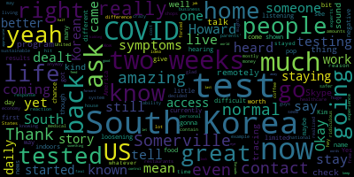

[Callahan]: We now have someone who is from here, but is currently in South Korea. And I don't know how many people listening know about South Korea and the way that they have dealt with COVID, but it's very different from how the US has dealt with COVID. And so here is Howard Kim. I'm just gonna pop your name up here. And you are live, so Howard, it's great to see you.
[SPEAKER_00]: It's great to see you as well.
[Callahan]: Thanks for coming on.
[SPEAKER_00]: Yeah, absolutely. It's great to be here. So I'm a software engineer usually based in the Somerville area. I've lived there for the last 10 years or so, and was there right when COVID broke. And my parents happen to live in Seoul, Korea. And I got a lot of questions from my friends around early February. saying, are your parents all right? Are your parents all right? Are you worried about your family? And I was thinking, I'm honestly a lot more worried about my friends and the people around us and myself than I am for my parents, because I knew that the South Korean public health response was more better prepared for what was coming and has kind of been borne out in the numbers. So I'm going to share a little bit of my personal experience about going to Korea and all of that and what that entails and what I saw on the ground and also the global situation as sort of a grounding factor for people who haven't been looking at the news. So personally, I was in the same boat as everyone else, as everyone is in right now. I spent about two weeks in isolation. from mid-March to the end of March, doing the quarantine thing that all the responsible citizens are doing. And I realized that it didn't make that much. I was really lucky to have family in Korea. So I'm a US citizen. I was born in the States. And I was a little bit concerned that if I happened to get sick in Korea, I wouldn't be covered with health insurance there. But I was seeing the news reports that was coming in about how there weren't enough ventilators, how there weren't any room in the hospitals and that you have to wait until you're basically, not to be frank, basically at death's door before you'd even be seen by a doctor.
[Callahan]: When you say you're hearing this news, you mean in America?
[SPEAKER_00]: In America, exactly. Yes. And I was thinking that that sounded really scary. So I got onto a plane to Korea and came and it landed on I think at the end of March so March 30th and immediately got put through an immigration process and a kind of a quarantine process that I'd never seen before. I've traveled to and from Korea a fair bit and basically I was taken to a secure location and tested. So basically as soon as I got off the plane I saw Um, as soon as I stepped out of the airport, I saw like lines of testing booths. So very unlike, um, um, the United States where you can't get a test unless you're, um, although I don't know, it's probably a little bit better now, but, um, at the end of March, you basically could not get a test unless you all basically, you knew you already had it.
[Callahan]: So, yeah, what I've heard is that it was, at first, you could only get tested, even if you had symptoms, you could only get tested if you had a known contact, if you'd been in contact with someone who was known to have had COVID. That was how limited the testing was. And now, then it was if you had symptoms of COVID, they're loosening it up a little bit, but it is still very difficult to get a test.
[SPEAKER_00]: Right. That's something that was on my mind when I made the move. And then basically as soon as I stepped off the test, I got a free test. So just to be clear, I am not a Korean citizen. I do not have Korean health care. I don't have anything like that. But I basically got tested for free by people in proper PPE, protective equipment. And then I was, for one day, I was taken to a secure location to, with all the other non-citizens while the test results came in.
[Callahan]: I was just going to ask if the test results had come back yet. Okay. So yeah.
[SPEAKER_00]: And they came in overnight.
[Callahan]: Get the test back.
[SPEAKER_00]: So came in about six to 12 hours. And then I got to go. I basically was free to go home. There were a bunch of restrictions as I wasn't a citizen and, you know, coming in from the United States, I was potentially at risk for COVID. And so I was required to install an app and report in on my temperature two times a day. Wow. Which you did yourself. Yes, exactly. And my location was being monitored on my phone. So there was sort of an upfront cost that I had to take to kind of make the numbers that you see on television from South Korea happen. But in the end, what I was doing, which is just basically staying at home, wasn't different than what I was doing before I left, in a large way, because I was just staying at home regardless. And the really nice thing was that we got sent a care package from the local Korean government. I have some pictures and they're actually kind of ridiculous how much food they sent me. They sent me a solid two weeks of food to encourage me not to leave the house.
[Callahan]: So even though you were tested and your test came back after one day, did they ask you to stay indoors for two weeks or did they just give you two weeks worth of food and then tell you you could go out?
[SPEAKER_00]: No, it was a requirement. So people who walked around, there was, I think, someone from Britain who walked around and actually had COVID and he basically ignored the app requests and he was forced to leave the country as a result. So they were taking this very seriously. So this might sound a little bit crazy, but they actually had one unannounced visit where they knocked on my door just to make sure that I was actually at home. So that might sound a little bit ridiculous, but at the same time, that's what everyone is being forced to stay at home now, right? You mean here in Somerville? Yes, in the United States. Sorry, excuse me. And now I can go out and I can walk around and I can basically do regular things.
[Callahan]: So you had two weeks of staying at home. You got tested. Your test came back negative. Yes. And then you were at home for two weeks, maybe because there's some chance that you could have had and it hadn't shown up yet on the test for whatever reason. you stayed home for two weeks. And after that time, now tell us what is your life like?
[SPEAKER_00]: Okay, so after that time, I got tested again. And something that I glossed over was in that care package was not just food, but there are also masks, there are also there was toilet paper, there was hand sanitizer, basically all the necessities that you would need to stay at home for two weeks. So it wasn't uncomfortable. And I was staying at my parents' house, which I chose, and you can basically pick your location.
[Callahan]: Now, when you were staying at your parents' house, did they have to stay home?
[SPEAKER_00]: So my parents did not have to stay home. As long as they didn't come into close contact with me.
[Callahan]: Okay, great.
[SPEAKER_00]: Yeah. So since then, life has been pretty much normal. When I go outside, I see about over 80 to 90% of people are wearing masks voluntarily. It is highly recommended. You see advertisements everywhere for public health, on television all the time. So people are definitely still conscientious about it. But for the most part, life is going on. I think that even the movie theaters are open now, which is really nice. Although, from what I heard, For my friends who actually did go to the movie theater, there were only three people there, and there were two of them. So they're still taking it very seriously.
[Callahan]: But restaurants, coffee shops?
[SPEAKER_00]: Yeah, they have a regular amount of people is what I would say. The economy took a hit. It took a hit the same as everyone else did, but it hasn't ground to a halt. Unlike the traffic, which is now back to normal, and it's now very difficult to get anywhere by car. because people are basically out and about. And that's borne out by the numbers, which shows that for all of last week, the number of confirmed new cases a day was in single digits. And to put that in perspective, Korea was one of the worst hit countries by the outbreak when it first broke out. So now to shift from my personal perspective, where I kind of put in the costs that I had to do, which were honestly were not that severe, putting an app in two times a day, stay home for two weeks, get tested. All for free, got free care package to kind of incentivize that. On the other end of that, I think at the end of February, there were a couple of thousand cases. There was a large incident with a spreading incident where a lot of people got it all at the same time. So there was sort of a panic response type of deal where the country didn't go into lockdown. People still went to work, but people were advised to wear masks, advised to have hand sanitizer. And you would see hand sanitizer pretty much everywhere for free use in elevators, at restaurants. And the number of cases dropped dramatically. And they had a very robust trace and, what's the word? What am I looking for? Basically a tracing program. Yeah, where anyone who had come into contact with a known confirmed case was asked to stay at home for two weeks, just as I was, who was at high risk, and then was given testing twice. And they also implemented the The drive-through response, which is basically drive-through testing, you could get tested in your car, a lot like getting a coffee from Starbucks or whatnot. And there would be basically no risk of exposure.
[Callahan]: Can I ask you, where does South Korea get all these tests? We cannot seem to get tests. You may not even know this, Why is there such a difference in the ability for people in South Korea to access tests than people like in Somerville, for example? Why can we not access tests here?
[SPEAKER_00]: So there's a couple of reasons for this. I'm going to start with some things I absolutely know are for sure, and then step into things that are less confirmed but still Probably true. So for sure is that Korea was exposed to exponential respiratory virus in the past. It had SARS in the early 2000s and then MERS again more recently in about around 2016. And so the public consciousness and the government was kind of warned that this was coming like in a very serious way. I think 60 people died from MERS back in 2016, which may not sound like a lot, but when you're dealing with an exponentially growing virus as the way that these things are, that is potentially very scary. And so the public health response has taken this seriously and has had a lot of testing scenarios in place in a way that the USA has not. To move to, so that's why Korea has done very well in this regard. While the U.S. has done so poorly is, I think, a little bit more controversial, but a very large part of it, I think, has just been the federal response. So from what I understand, in early February, late March, the U.S. government was actually offered a test that was developed internationally.
[Callahan]: I heard about this.
[SPEAKER_00]: Yeah, from Germany. And it was turned down. the reasons for which are unclear, but seem to lead to, what is it, the private health insurance company or private health companies looking to use their own testing to help benefit themselves at the potential cost of the public. And so I think that is, whether or not that all of that is exactly as I said it isn't clear, But it does seem to be that the US has a habit of prioritizing private industries rather than the public health at large. And that's something that I think that we're seeing right now, what effect that can have on communities and people and lives. And I think that that is something that really needs to change. I don't think at all that Korean political system is perfect. I think that it has, it's a real country the same as everyone else. If you talk to people, they have the same problems that everyone has with their local politics and their country's politics. But at the same time, I feel like there's a level of trust in the government and more abstractly in science in general to provide answers and Generally, if people say, if people hear on the news science suggests that you should do X because it is best for you and it's going to keep you safe, people will generally abide by that. I'm not sure.
[Callahan]: Can I ask, does South Korea have a national healthcare system?
[SPEAKER_00]: Yes, it absolutely does. It has basically the equivalent of Medicare for all in which everyone is on a government-issued health plan. So there are no private options, as it were. I know that South Korea is, actually, of all the world's developed countries, I can think of very few besides the United States that don't have a public health care policy. And I think that shows when private and public interests collide. And I think that that's really shown in the US today. So I don't know if that's a little too on the nose. But if you look at the numbers, it's really quite striking. So Incheon International Airport, which is 300,000 people, excuse me, which is a major international hub, took in 300,000 travelers in the month of March. And not a single equivalent of their TSA, of those employees, not a single one of them have contracted COVID. Wow. Which is crazy. And when I was walking through the lines, every single person I interacted with that was on staff was wearing PPE, was wearing a mask, The people who were doing the testing were geared up from head to toe in what looked like an astronaut suit, basically. They just took it seriously because they had seen the power of exponential growth. And just because you can't see it right now doesn't mean that it's not a threat. And they didn't wait until they saw people getting sick to take it seriously, I think is the other thing.
[Callahan]: Wow. It is such an amazing story. And I'm so glad that you started with the personal story of your own experience living in Somerville. And I had not realized that you were here when COVID started. And you decided to go to South Korea knowing that the South Korean reaction to this was going to be much better, was much better, and that you would be both safer and more free to go about your normal daily life in South Korea than here?
[SPEAKER_00]: Yeah, so I actually wanted to touch on that point a little bit. I think I saw a headline recently that somebody said something about South Korea not really being free because it's tracking people for all of these things. I mean, you can say that, but first of all, your phone is probably already tracking you already. And by probably, I mean, it's tracking you already. So that's the unfortunate truth of it. Second is that I had to install an app by the government, but I could uninstall it after that was over. So it's not like I'm being tracked any more than usual after the kind of risk period was over. And third is that I feel a lot freer right now than I did in the United States. I'm very, very lucky. I don't want to stress that enough, that I had the ability to work in a field where I don't have to show up, where I can work remotely.
[Callahan]: And now in Somerville, you would be forced to work remotely anyway. Like you would still be having to work remotely right now.
[SPEAKER_00]: Right. That's because we need to. But we needed to a month ago and a month and a half ago as well. We just didn't see it yet. We pretended that the problem was going to go away. And that's obviously not good public policy. Because the problem is not going to go away. It's still whether it's going to be with us for the next couple months or the next over a year remains to be seen.
[Callahan]: But South Korea's response sounds like it's just a lot more sustainable than ours. Because you guys are going about mostly about your normal business, but with the testing and tracing program that they have, the contact tracing program, they can contain it very well while most people are kind of going about their daily lives and the economy is not under a huge hit. Does that sound about right?
[SPEAKER_00]: Yeah. people are really encouraged to get testing as much as possible. So testing costs roughly the equivalent of, I think it's 140 US dollars, so it's not the cheapest thing in the world, but first you can get them, and second, if you test positive, it's free. Right. So it's subsidized by the government, and I think But right now, in the United States, I saw tests being put out there for about $2,000 to $3,000. Is that incorrect?
[Callahan]: Is that crazy? I don't know. We'll have to check. I really have no idea. We'll check on that.
[SPEAKER_00]: That might be crazy.
[Callahan]: It might be right. I mean, hey, we're in the US, where medical things cost ridiculous amounts of money.
[SPEAKER_00]: Yeah, but at the same time, I've heard that the testing kits are not very accurate. I've heard that they have a 20% to 30% false negative rate.
[Callahan]: South Korean ones or United States?
[SPEAKER_00]: No, not the South Korean ones, the United States ones. The South Korean ones have a false negative rate of, I believe, 5%. So it's not zero, but it's much better.
[Callahan]: We'll get to our experts and we'll ask about that here as well.
[SPEAKER_00]: Again, I'm definitely not an expert on the medical side of things. But yeah, from what I can see on the ground, it's really night and day, the difference.
[Callahan]: So amazing. So we have something to look forward to. We can get life back to normal and keep this thing under control. So it has been really eye-opening to talk to you. I appreciate you coming on so much. And I have to say, it is kind of amazing that your Skype feed is great. half a world away from us. So good job Skype. Yeah, no kidding. So yeah, thank you so much. Do you have any last, any final words before we let you go?
[SPEAKER_00]: Not really. Thank you so much for having me on. It was a pleasure to be here.
[Callahan]: Really, really fascinating to hear about what life is like there for you right now. And I hope we get there soon. Thank you so much. Great to talk to you.
|
total time: 4.29 minutes total words: 743  |
|||
{kind=link}